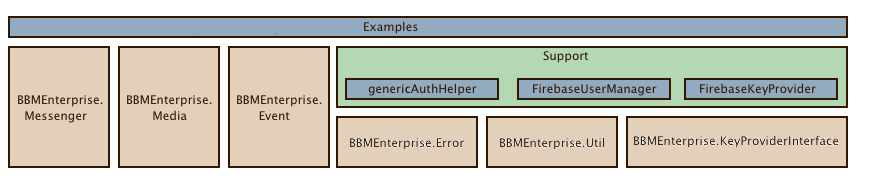

The BBM Enterprise SDK provides a framework to develop real-time, end-to-end secure messaging capabilities in your own product or service.
The BBM Enterprise SDK security model ensures that only the sender and intended recipients can see each message sent, and ensures that messages aren't modified in transit between the sender and recipient. The BBM Enterprise SDK also provides the framework for other forms of collaboration and communication, such as push notifications, secure voice and video calls, and file sharing. You can even extend and create new types of real-time services and use cases by defining your own custom application protocols and data types.
The BBM Enterprise Web SDK comprises the following components:

The Example.RichChat application and Example.firebase.KeyProvider class are expected to be replaced or customized by the customer to suite their own integration of the BBM Enterprise Web SDK.
The components are:
-
BBMEnterprise.Messenger
This library offers the BBM Enterprise messaging interfaces. It provides methods for creating, inviting, joining, and leaving chats as well as methods for interacting with those chats. This library is responsible for establishing and maintaining connectivity to the BBM Enterprise infrastructure. -
BBMEnterprise.Media
This library offers the BBM Enterprise media interfaces. It provides methods and events for making, accepting and interacting with voice/video calls and data only connections. -
BBMEnterprise.Event
This library defines structure of the events emitted by the BBM Enterprise Web SDK. -
BBMEnterprise.Error This library defines the different error classes that may by returned by the BBMEnterprise.Messenger interfaces.
-
BBMEnterprise.Util This library exposes some utility functions that are useful when dealing with binary data.
-
BBMEnterprise.KeyProviderInterface This class defines the virtual interface that must be overridden by any class that will be used as the KeyProvider for the application.
-
Support FirebaseKeyProvider This class provides an example implementation of a KeyProvider that uses a Firebase Realtime Database for key storage.
-
Support FirebaseUserManager This class is an example implementation of user contact list management module based on Firebase Realtime Database.
-
Support genericAuthHelper This class provides methods for user authentification with OAuth 2.0.
-
Examples This collection of JavaScript, HTML, and resources provides example applications that exercise the functionality offered by the BBM Enterprise SDK for JavaScript.